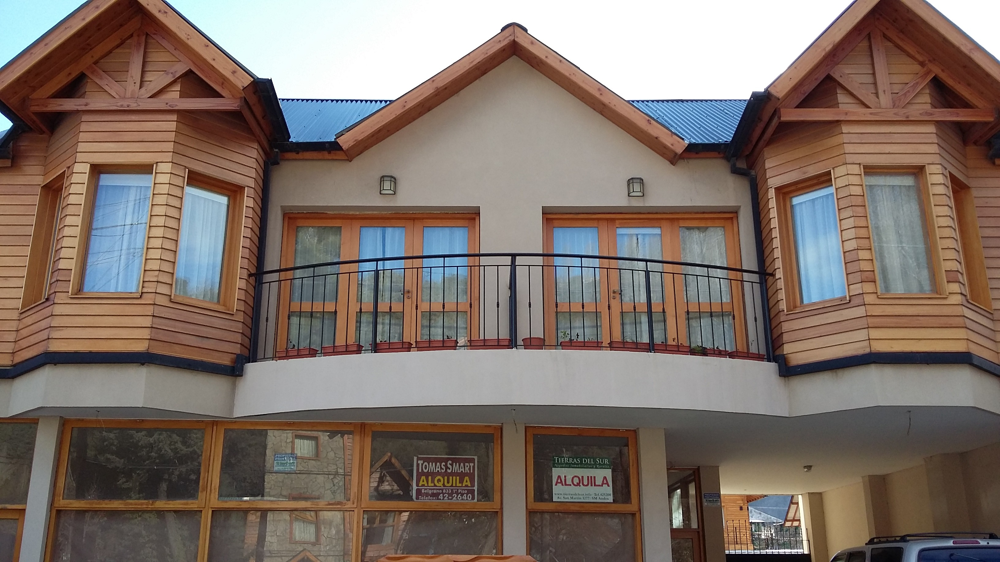

Departamentos Kevork


SMA
Esta ciudad es ideal para pasear en familia, conocer negocios y hacer amistades. Llena de restaurantes para disfrutar de su excelente gastronomía, y chocolaterias ideales para llevar regalos a sus familiares.La ciudad es ideal para pasear en familia, conocer negocios y hacer amistades. Llena de restaurants para disfrutar de su gastronomía, y chocolaterias ideales para llevar regalos a sus familiares.

Cerro Chapelco
En invierno se puede disfrutar de una excelente vista mientras se esquía en el cerro Chapelco.n invierno se puede disfrutar de una excelente vista mientras se esquía en el cerro Chapelco.n invierno se puede disfrutar de una excelente vista mientras se esquía en el cerro Chapelco.n invierno se puede disfrutar de una excelente vista mientras se esquía en el cerro Chapelco.

Volcán Lanín
El imponente volcán Lanín es el emblema de San Martín de los Andes y del sur de la Patagonia Argentina.
Tiene una altitud de 3776 metros sobre el nivel del mar, este volcán se encuentra incluido en el Cinturón de Fuego del Pacífico. Presenta grandes glaciares en su cara sur. En verano las temperaturas extremas van de 0 °C a 33 °C, mientras que en invierno la media es de 4 °C, con mínimas de -3 °C y máximas de 16 °C.